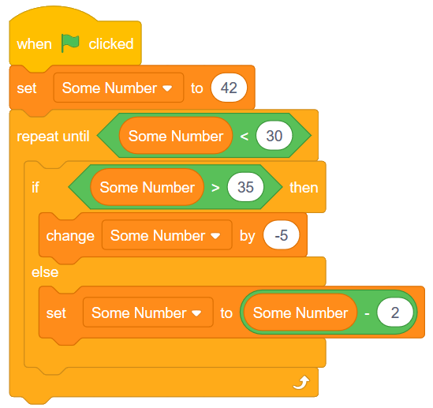

5. Code de traçage (tracing code) et Mouvement en parabole (Répéter jusqu’à (repeat unitl))¶
Aperçu rapide de la journée
Introduisez le bloc répéter jusqu’à en traçant le code avec des variables simples et des conditionnelles. Utilisez le bouton Répéter jusqu’au bloc pour simuler le mouvement d’un boulet de canon (le mouvement se répète jusqu’à ce que le boulet atteigne le sol).
- Principes et techniques fondamentaux (PT)
- 20IN-PT.1 Appliquer diverses stratégies de résolution de problèmes pour résoudre des problèmes de programmation dans le cours d’Informatique 20.
- Fondements de la programmation (FP)
- 20IN-FP.1 Se servir de différents types de données, y compris entier, virgule flottante, booléen et chaine pour résoudre des problèmes de programmation.
- 20IN-FP.2 Faire des recherches sur la manière dont les structures de contrôle affectent le déroulement du programme.
Si vous préférez regarder une vidéo, la vidéo suivante montre les mêmes idées que celles que j’ai décrites dans le texte ci-dessous.
5.1. Répète jusqu’à¶
Parfois, nous ne savons pas nécessairement combien de fois nous devrions répéter un bloc dans notre code. Nous tirons peut-être un canon virtuel et nous voulons que le boulet de canon continue à bouger jusqu’à ce que la balle touche le sol. Selon les valeurs des forces que nous appliquons au boulet de canon (gravité, vent, frottement, etc.), le nombre de fois que nous devrions répéter le code contenant le mouvement du boulet de canon changera. Dans ces situations, nous voulons utiliser le bloc “répéter jusqu’à”…” “.

Tout code placé à l’intérieur du bloc “répéter jusqu’à”…” “ continuera à se produire jusqu’à ce que la condition soit vraie. Par exemple, nous pourrions faire avancer un personnage de 10 pas dans n’importe quelle direction jusqu’à ce qu’il touche le bord de l’écran.

5.2. Tracer un bloc Répéter jusqu’à ayant des variables¶
Un moyen de vous assurer que vous comprenez comment fonctionne un bloc répété jusqu’à”…” consiste à essayer de tracer le code qui contient un bloc répété jusqu’à”…”. Tracer le code est simplement de lire le code dans le même ordre que l’ordinateur lira le code, ce qui peut signifier de répéter certaines parties du code.
Pour pratiquer cette compétence, considérez le code ci-dessous. Si vous décidez de recréer le code ci-dessous dans Scratch, notez que vous devrez d’abord cliquer sur l’onglet Données, puis créer une variable nommée x.

Note
Note pour l’enseignant: Le fait de tracer le code avec les élèves à l’aide d’un graphique en t sur un tableau blanc est un excellent moyen d’introduire l’idée de code de traçage.
Lorsque nous traçons le code ci-dessus, il peut être très utile d’utiliser un T-Chart pour organiser notre réflexion.
| Itérations (nombres de fois que la répétition a été répété) | valeur de x |
|---|---|
| 0 | |
| 1 | |
| 2 | |
| 3 | |
| 4 | |
| 5 |
Itérations désigne le nombre de fois qu’un bloc de répétition s’est produit. Maintenant, nous devons parcourir le code, une ligne à la fois pour nous assurer que nous comprenons ce qui se passera à chaque étape. Après 0 itérations (c’est-à-dire avant l’exécution du bloc de répétition), la valeur de x est définie sur 10, nous la remplissons donc dans notre tableau.
| Itérations (nombres de fois que la répétition a été répété) | valeur de x |
|---|---|
| 0 | 10 |
| 1 | |
| 2 | |
| 3 | |
| 4 | |
| 5 |
Maintenant, nous devons réfléchir à la première itération de la boucle. Avant d’entrer dans la boucle, nous devons confirmer que la boucle va vraiment se produire. Puisque notre valeur de x est actuellement 10, nous entrons dans la boucle, car nous devons répéter jusqu’à ce que x soit supérieur à 20. Dans la boucle, nous rencontrons une instruction si qui nous devons résoudre. Puisque 10 est inférieur à 18, nous exécutons le code à l’intérieur de l’instruction if (et non le code à l’intérieur de la partie sinon). Changer x par 3 ajoute simplement 3 à la valeur précédente de x, donc nous sommes maintenant à la valeur 13. Le dernier bloc à l’intérieur de la boucle est simplement un bloc “dire”, ce qui n’affectera pas la valeur de x. Remplissez la ligne suivante de notre tableau.
| Itérations | Valeur de x |
|---|---|
| 0 | 10 |
| 1 | 13 |
| 2 | |
| 3 | |
| 4 | |
| 5 |
La flèche sur la partie inférieure du bloc de répétition indique que le déroulement du code reviendra au début du bloc de répétition. Nous devons maintenant confirmer à nouveau que la boucle se reproduira. Puisque 13 n’est pas supérieur à 20, nous devons répéter à nouveau. 13 est inférieur à 18, nous exécutons donc à nouveau le bloc de code dans l’instruction si, ce qui modifie x par 3 pour obtenir x=16. Notez que nous n’exécuterons jamais à la fois le code dans la partie si et la partie sinon. exécuter une partie ou l’autre, jamais les deux.
| Itérations | Valeur de x |
|---|---|
| 0 | 10 |
| 1 | 13 |
| 2 | 16 |
| 3 | |
| 4 | |
| 5 |
Le même processus se reproduit. Puisque 16 est inférieur à 20, la boucle continue. Comme 16 est inférieur à 18, nous changeons x de 3 pour obtenir une nouvelle valeur de 19.
| Itérations | Valeur de x |
|---|---|
| 0 | 10 |
| 1 | 13 |
| 2 | 16 |
| 3 | 19 |
| 4 | |
| 5 |
Comme 19 est inférieur à 20, nous entrons dans la boucle à nouveau. Cependant, lorsque nous examinons l’instruction if, 19 étant inférieure à 18, nous exécutons le code dans le bloc sinon. Nous avons donc besoin de mettre x à x + 2. C’est juste une autre façon de dire que nous allons changer x par 2, donc notre nouvelle valeur pour x est 21. Vous pouvez lire le bloc comme “définir x comme valeur précédente de x plus 2 “.
| Itérations | Valeur de x |
|---|---|
| 0 | 10 |
| 1 | 13 |
| 2 | 16 |
| 3 | 19 |
| 4 | 21 |
| 5 |
Encore une fois, avant d’entrer dans la boucle, nous devons vérifier si la condition de répétition est remplie. Puisque 21 est supérieur à 20, la condition de répétition est remplie, nous ne rentrons donc pas dans la boucle. Si nous avions un autre bloc accroché au bas du bloc de répétition, il s’exécuterait maintenant. Comme nous n’avons pas un autre bloc a exécuter, le programme a pris fin.
5.3. Activité en classe: Répéter jusqu’à¶
Votre enseignant vous remettra une copie imprimée du document de pratique suivant. Scratch répèter jusqu'à pratique.
Now that you have seen how to trace the the code contained in a repeat until block, take a few minutes to try to fill in the practice sheet linked to above. After you have completed each question, you may double check your work by recreating the question in Scratch.
Note
Teacher Note: Instead of having students recreate the problems in Scratch to check their work, it can be very useful to trace the code together as a class. Writing down a t-chart on a whiteboard is a nice way to talk through problems like these ones.
If you would like to edit the Repeat Until Practice handout, you can download the editable Word document.
5.4. Cannonball Motion Using Repeat Until¶
Let’s use the repeat until block to create a simulation of a cannonball being shot. First, we need to make a cannonball. To do this, click on the paintbrush beside New sprite (under the stage):
The process of creating the cannonball sprite is shown in the short animation below. There are a few things you should be aware of:
- when drawing the circle, you can hold down the shift key to force the ellipse to remain circular.
- be sure that your cannonball is directly above the center point marker on the canvas (this is easier to see if you zoom in once or twice)
Note
In the previous version of Scratch (Scratch 2), you would have needed to:
- use “Convert to vector” before doing any drawing. Your teacher might decide to go into more depth about the difference between vector and bitmap graphics.
- set the costume center (since the calculations about the x and y coordinates of the sprite are based on the costume center point).
To create the cannonball simulation, we need some variables to represent the speed at which the cannonball is traveling. Click on the Data tab, and make two variables: xSpeed and ySpeed. Then create a script that looks like the following:

When the space key is pressed, the cannonball will be reset to it’s original position (on the left hand side of the screen), and the xSpeed and ySpeed variables will both be set to 4. The repeat until block condition states that the repeat block should continue until the y position of the sprite is less than -159. The y position block can be found at the bottom of the Motion tab. In other words, whatever is inside the repeat block will continue until the cannonball hits the virtual ground level (which we have set to be -159). Finally, we change the x and y coordinates of the sprite by the xSpeed and ySpeed variables. The last block of code in the repeat until is how we simulate gravity. Every iteration of the repeat until loop causes the ySpeed variable to decrease in value. Because we start with a positive ySpeed, the cannonball moves upward when the space key is pressed. Over time, however, the amount that the cannonball is moving up decreases, and then eventually becomes negative (meaning that the ball begins to fall). This allows us to create a simple simulation of parabolic motion.
Note
Experiment by changing the initial values given for the xSpeed and ySpeed variables. You may also want to adjust the “gravity” value (initially set at -0.1).
5.5. Check Your Understanding¶
scratch-repeat-until1: What would the value of the Some Number variable be after the following code has executed?
scratch-repeat-until2: How many iterations would the following code take to finish it’s execution? In other words, how many times would the repeat until block occur?
scratch-repeat-until3: How many iterations would the following code take to finish it’s execution? In other words, how many times would the repeat until block occur?

scratch-repeat-until4: What would the value of the Some Number variable be after the following code has executed?
5.6. Practice Problem¶
Work on your second Scratch assignment, for any remaining time.
Note
If your teacher did not assign you a project, you may want to consider making a Rock Paper Scissors simulator to practice your Scratch skills. You will need to use variables, if-else blocks, and broadcasts. A nice extension to the basic version of this project is to allow the user to choose either a player versus computer game, or a computer versus computer game.